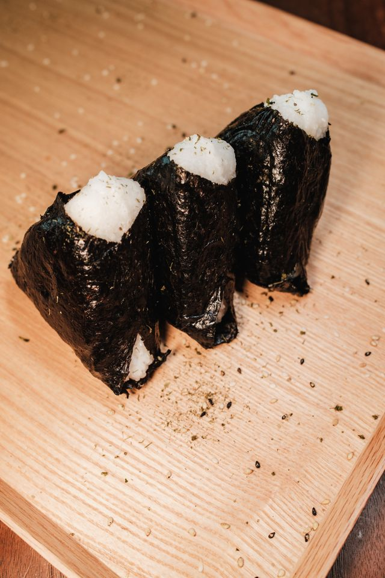

Onigiri(Japanese Rice Balls)

These delicious japanese rice balls are perfect for meals, snacks, or any occasion. They can be filled with a variety of things including salmon, tuna, meat, vegetables, or even chocolate.
Ingredient List
- 4 cups uncooked short-grain white rice
- 5 ½ cups water, divided
- ¼ teaspoon salt
- ¼ cup bonito shavings (dry fish flakes)
- 2 sheets nori (dry seaweed), cut into 1/2-inch strips
- 2 tablespoons sesame seeds
Directions
- Wash rice in a mesh strainer until water runs clear. Combine washed rice and 4 1/2 cups water in a saucepan. Bring to a boil over high heat, stirring occasionally. Reduce heat to low; cover, and simmer rice until water is absorbed, 15 to 20 minutes. Let rice rest for 15 minutes to continue to steam and become tender. Allow cooked rice to cool.
- Combine remaining 1 cup water with salt in a small bowl; use to dampen hands before handling rice. Divide cooked rice into 8 equal portions. Use one portion of rice for each onigiri.
- Divide one portion of rice in two. Create a dimple in rice and fill with a heaping teaspoon of bonito flakes. Cover with remaining portion of rice and press lightly to enclose filling inside rice ball. Gently press rice to shape into a triangle; wrap with a strip of nori and sprinkle with sesame seeds. Repeat with remaining portions of rice.
Home